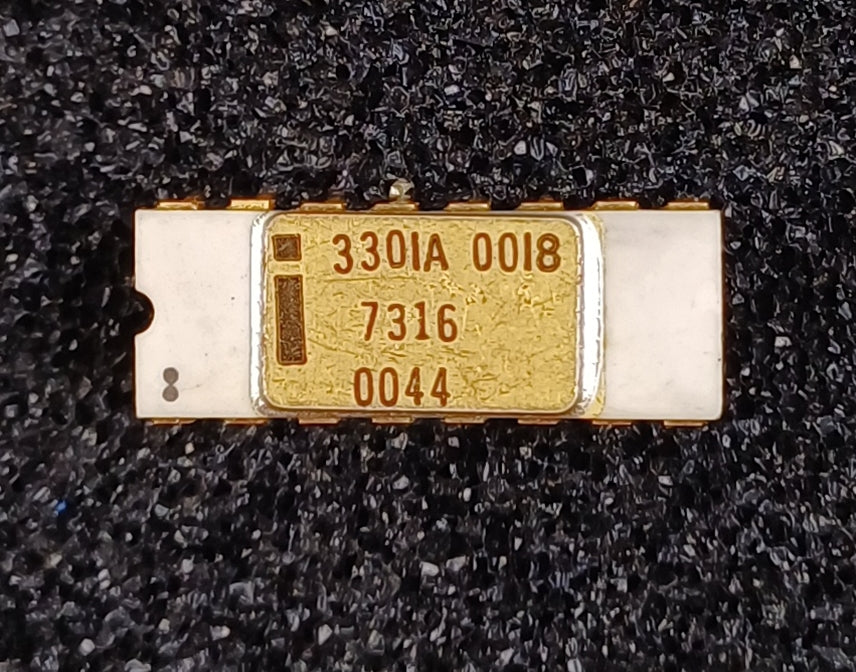
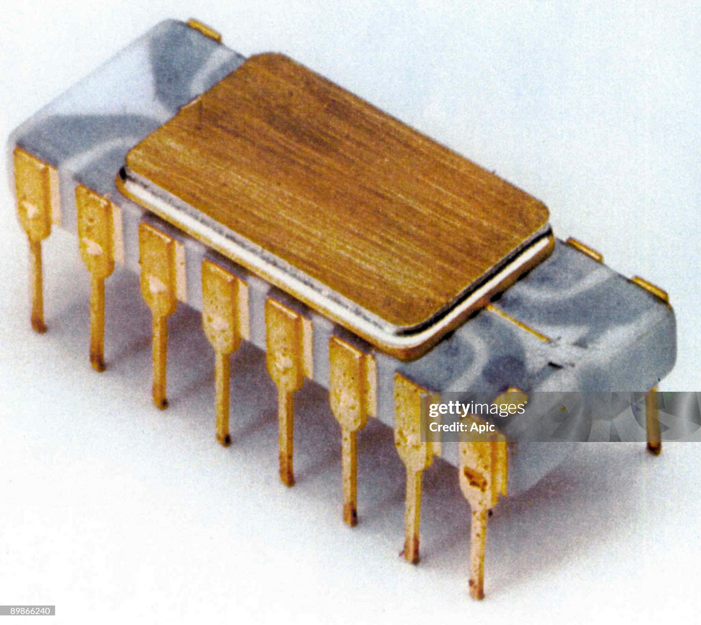
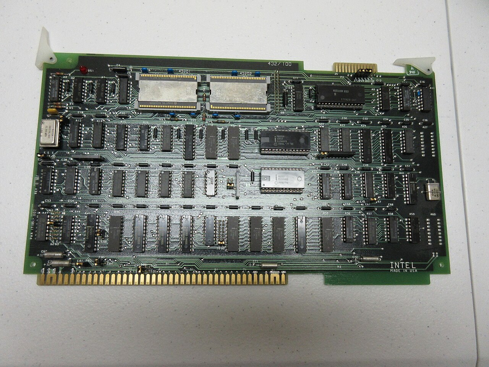
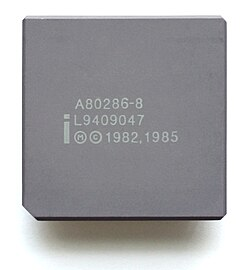
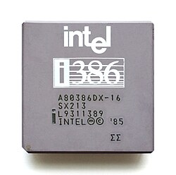
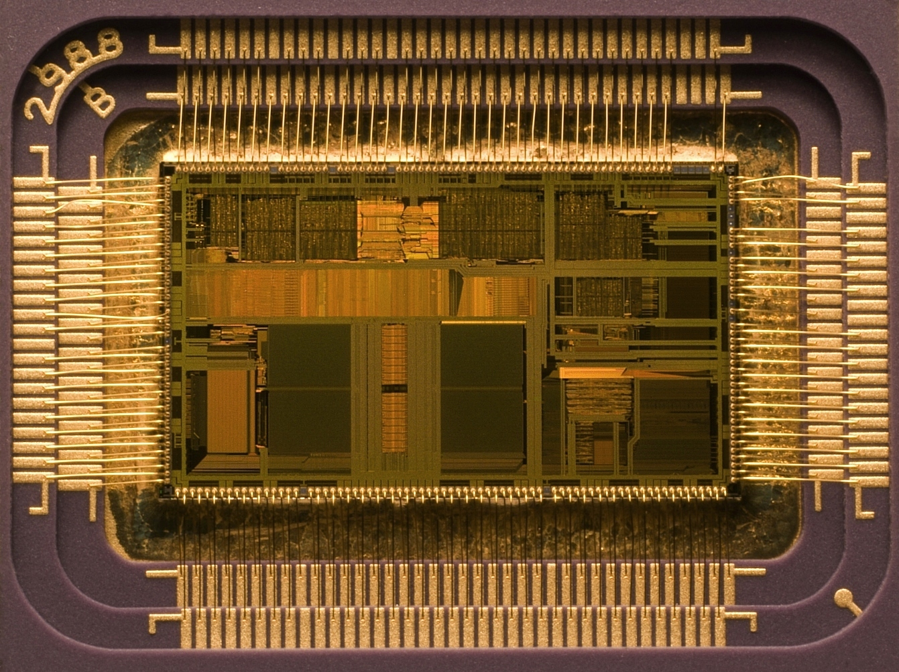
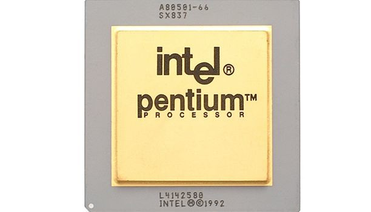
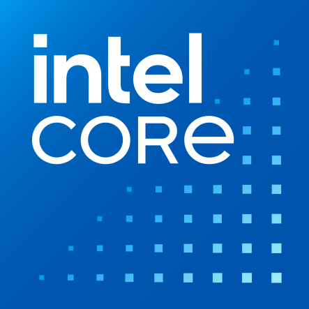
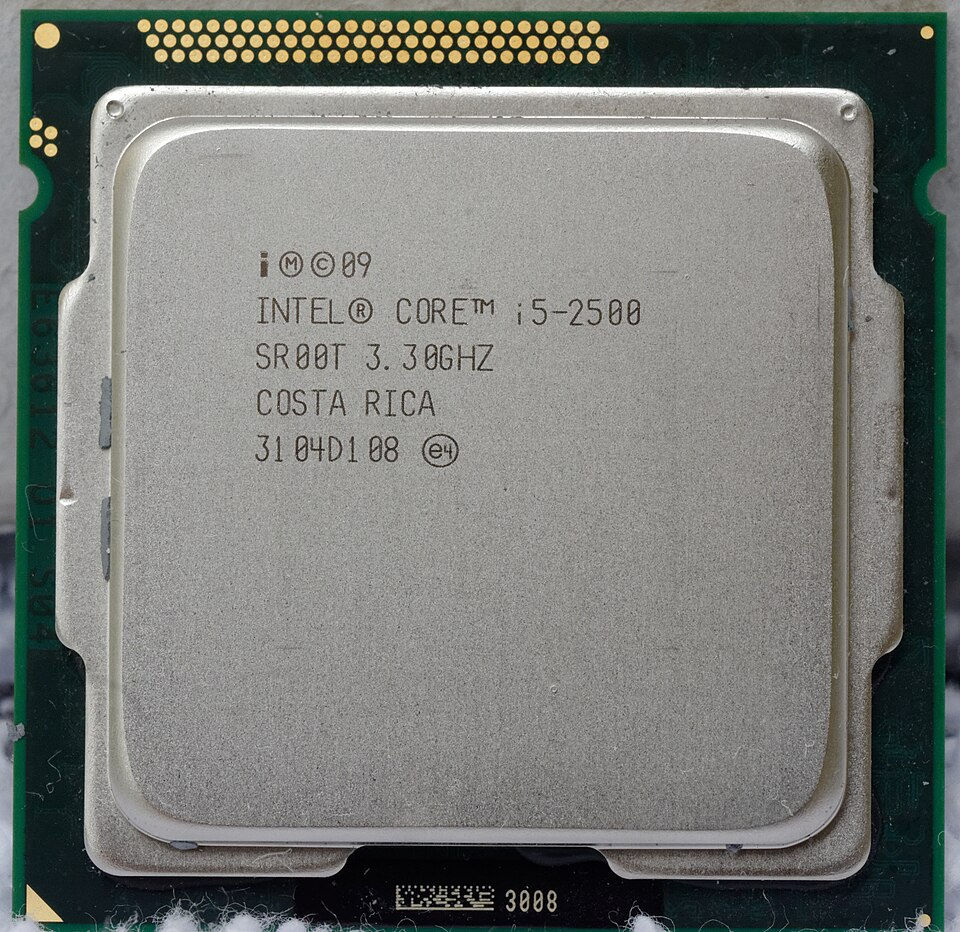

Sustainability Through the Ages
Explore Intel's journey through time, discovering how our commitment to innovation has shaped a more sustainable future for technology and our planet.
Explore Intel's journey through time, discovering how our commitment to innovation has shaped a more sustainable future for technology and our planet.
Our journey
Scroll through the moments that shaped Intel's approach to a more responsible future.

Schottky TTL bipolar

Intel 4004 Microprocessor

Intel iAPX 432

Originally Intel 80286

The i386

Intel's i486

The Pentium Brand

Intel Core

Sandy Bridge
Scroll to view timeline on larger screens. Hover over cards to learn more.